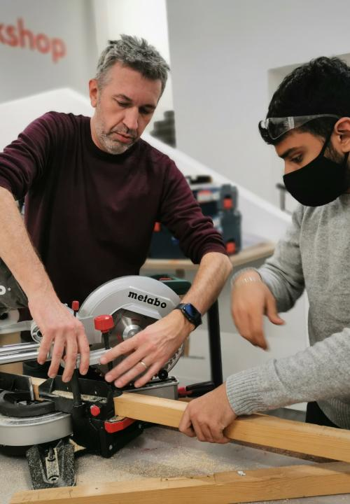
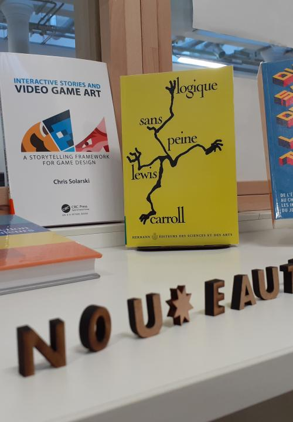
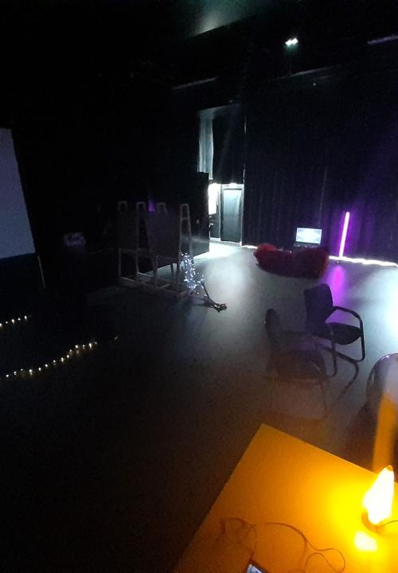

Fablab
L'atelier de fabrication du Créative Lab ! Équipé de machines comme la découpeuse laser, les imprimantes 3D ou la brodeuse numérique, c'est l'endroit idéal pour concrétiser vos idées, expérimenter et créer des prototypes innovants.

Médiatech
Un espace calme et propice à la recherche. Vous y trouverez une multitude de ressources (livres, magazines, supports numériques) dédiées à la création et aux nouvelles technologies. Un lieu parfait pour s’informer, s’inspirer et approfondir ses connaissances.

ShowRoom
Une pièce sombre et dédiée aux travaux sur l’image et la vidéo. Parfait pour tester des projections, travailler sur des effets visuels ou tout projet nécessitant un contrôle précis de l’éclairage et des conditions visuelles.